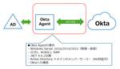
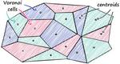
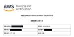
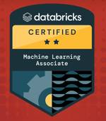
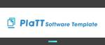
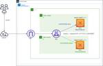
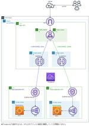
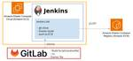
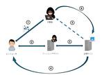

APC 技術ブログ
https://techblog.ap-com.co.jp/
株式会社エーピーコミュニケーションズの技術ブログです。
フィード
VSCodeでAzure Policyに準拠していないリソースをSlackに自動通知してみよう
APC 技術ブログ
この記事では、VSCodeでAzure Policy準拠状況をSlackに自動通知するアプリを開発する方法について紹介します。定期的に「Azure Policyのページを開いて、リソース状況を確認して、タグの付与を行っていないユーザーに対して連絡を入れ…」という行為を行うのは運用コストがまだまだ大きいです。 できればAzure Policyにて制定したルールに従っていないリソースを自動で列挙して、定期的にチャットなどでチームに連絡するところまでを自動化したいですよね？ ご安心ください。それ、Azure Functionsでできます。
4時間前

【Okta】OktaとActive Directoryの連携について
APC 技術ブログ
はじめに Okta × Active Directory 概要 構成 ■構成要件 ■今回検証した構成 設定 1) Okta 管理画面 2) Windows Server（Okta Agent） 3) 再びOkta 管理画面 4) クラウドサービスログイン確認 おわりに 0-WANについて 一緒に働いて頂ける仲間も募集しています はじめに こんにちは、エーピーコミュニケーションズiTOC事業部 BzD部 0-WANの山田です。 OktaのActive Directory連携についてご紹介します。 Okta × Active Directory 概要 企業のID管理はActive Director…
5時間前

ベクトルサーチおよびFAISSによる検索速度最適化！
APC 技術ブログ
背景 目標 手順 実行 データセットを準備 文埋め込み (Sentence embedding) UDFによるスピードアップ 文と埋め込みをDatabricksテーブルに保存する テーブルから文と埋め込みを読み込む Databricksドライバーサイズを増やす ベクトルインデックスの構築 ベクトルサーチを実行 最適化手法 ベンチマーク 次元削減 主成分分析 (Principal component analysis a.k.a. PCA) インクリメンタルPCA 寄与率 (Explained Variance Ratio) 直積量子化 (Product Quantization) パーティショ…
7時間前

【合格体験記】AWS Certified Solutions Architect - Professional に合格しました。（SAP-C02）
APC 技術ブログ
概要 こんにちは、株式会社エーピーコミュニケーションズ クラウド事業部の星野です。 AWS Certified Solutions Architect - Professionalに合格したので、受験の体験記を書いてみたいと思います。 概要 業務経験と取得資格 学習期間と学習に利用した教材・問題集 試験の感想 おわりに 業務経験と取得資格 期間：新卒1年目から4年と少しの間 業務内容(主に使ったサービス)：AWSへシステム移行に伴う主に下記のサービスの開発と改修作業。 サービス名：NW全般(Direct Connect, AWS Transit Gateway）,Cloudformation（…
11時間前
Snowball Edgeについて
APC 技術ブログ
はじめに Snowball Edgeのユースケースについて Snowball Edge Storage Optimizedの用途と特徴 Snowball Edge Compute Optimizedの用途と特徴 おわりに はじめに こんにちは、株式会社エーピーコミュニケーションズ クラウド事業部の星野です。 本技術ブログの目的は「AWSのSAA(ソリューションアーキテクトアソシエイト)試験対策の知識整理」 のためにご覧いただければと思います。 AWSのSAA試験合格に求められる「コストを最適化したコンピューティングソリューションを設計する」 対象知識のハイブリッドコンピューティングオプションの…
2日前
AWS ANSに合格しました
APC 技術ブログ
こんにちは、株式会社エーピーコミュニケーションズ クラウド事業部の田島です。 先日、AWS ANSに合格しましたので、所感を記載していこうと思います。 保有資格 AWS SAA,SOA,DVA,SAP,DOP,SCS,DBS 点数 805点 勉強時間 勉強期間は3か月程度でしたが、実際の勉強時間は30時間程度でした。 業務でTransitGatewayに触れる機会があったので、その点は理解が進んだので良かったです。 使用した教材 要点整理から攻略する『AWS認定 高度なネットワーキング-専門知識』 (Compass Booksシリーズ) Amazon リンク 上記の参考書を一読しました。 一部…
4日前
AWS Network Firewallで宛先ドメインフィルタリングを行う
APC 技術ブログ
目次 目次 はじめに ゴール 前提 App instance構築 AWS Network Firewall構築 ルートテーブルの編集 接続確認 AWS Network Firewallポリシーの編集 参考 まとめ おわりに はじめに こんにちは、株式会社エーピーコミュニケーションズ クラウド事業部の松尾です。 今回は「AWS Network Firewall」を検証してみます。「Firewallとして色々制御できるサービス」程度の理解ですが、より具体的に機能を確認してみたいと思います。 検証するのは宛先ドメインのフィルタリング動作です。例えばWindowsサーバでWindowsUpdate通信…
5日前

Databricks Certified Machine Learning Associate合格
APC 技術ブログ
はじめに GLB事業部Lakehouse部の阿部です。 先日、Databricks Certified Machine Learning Associateに合格しました! credentials.databricks.com 本記事では、試験の概要と試験対策について解説します。 Machine Learningに入門したい方、DatabricksのMachine Learningのコンポーネントを理解したい方にはオススメの試験となっております。 Data Engineer AssociateとProfessional合格に向けた試験対策については、以下のブログに記載しております。 Data …
5日前
Backstage のPermission Frameworkを理解する
APC 技術ブログ
はじめに みなさん、 Backstage活用されていますか？？ ご存知無い方のためにあらためて。BackstageはCNCFのプロジェクトの１つで、拡張性の高い開発者ポータルのOSSです。機能拡張などはPluginを追加導入することで実現します。 Backstageでは組織内で開発する様々なサービス、アプリケーション、インフラストラクチャリソースをソフトウェアカタログとして登録し、利用者間でそうした情報を共有したりすることができます。 このソフトウェアカタログですが、デフォルトではすべてのリソースが利用者全員参照・更新できるようになっています。 しかし、実際の開発チームにおいては、特定の開発チ…
6日前

【初心者向け】APIGateway＆CloudWatch Syntheticsを使ってE2Eテストやってみた。後編
APC 技術ブログ
目次 目次 はじめに どんなひとに読んで欲しい CloudWatch Syntheticsとは 料金 前提 手順 CloudWatch Syntheticsの設定 動作確認 正常系 動作確認 異常系（呼び出しレート超過） 動作確認 異常系（APIエンドポイント削除） 動作確認 異常系（フロントエンドエンドポイント削除） おわりに お知らせ はじめに こんにちは、クラウド事業部のサカタニです。 最近、CloudWatch Syntheticsというサービスを初めて知りました。 いい機会なので自分で手を動かしてどんなことができるサービスなのか勉強した内容のまとめです。 今回はCloudWatch …
8日前
DataSyncの転送パフォーマンスを検証する
APC 技術ブログ
目次 目次 はじめに ゴール 前提 テスト転送 テスト転送結果の検証 フル転送 差分転送 差分転送時間の短縮 まとめ おわりに はじめに こんにちは、株式会社エーピーコミュニケーションズ クラウド事業部の松尾です。 データ移行サービスのDataSync、これまで動作検証は何度か実施してきていますが、パフォーマンスの観点ではまだ未検証です。今回はDataSyncのパフォーマンス、具体的には大容量データの転送時、DataSyncの設定によってどのくらい速度が違うのか、を検証していきたいと思います！ ゴール 本記事でお伝えすることは次の内容です。 DataSyncでの大容量データ転送の設定 設定の違…
9日前
【初心者向け】APIGateway＆CloudWatch Syntheticsを使ってE2Eテストやってみた。前編
APC 技術ブログ
目次 目次 はじめに どんなひとに読んで欲しい APIGatewayとは ゴール 手順 Lambda作成 APIGateway作成 S3バケット作成 完成 おわりに お知らせ はじめに こんにちは、クラウド事業部のサカタニです。 最近、CloudWatch Syntheticsというサービスを初めて知りました。 いい機会なので自分で手を動かしてどんなことができるサービスなのか勉強した内容のまとめです。 まずはCloudWatch Syntheticsの機能検証の前編、準備編としてAPIGatewayを使用したWebアプリケーションの作成方法をご説明します。 CloudWatch Synthet…
9日前

PlaTT Software Templateのご紹介
APC 技術ブログ
こんにちは。ACSD事業部の安藤、青木です。Platform Engineering KAIGI 2024 の弊社ブースにて、先日リリースしたPlaTTのコンテンツの一つとしてPlaTT Software Templateのデモを展示・紹介させていただきました。当日は非常に大勢の方に、ブースへお立ち寄りいただき、Software Templateのメリットやユースケースをお話させていただきました。セッションの合間という短い時間でご覧いただいた方もいらっしゃる中で、多くのご質問やご反応をいただきました。どんなアーキテクチャなのか気になった方もいらっしゃるかと思いますので、簡単ですが紹介させていただきます。
9日前
オブザーバビリティとは？ ―その必要性と実現のための要件について― 2
2
APC 技術ブログ
目次 目次 はじめに 参考にした書籍 オブザーバビリティとはなにか？ なぜオブザーバビリティが必要なのか？ メトリクスを用いたモニタリングの限界 分散システムではオブザーバビリティを導入しないと大変 オブザーバビリティはどのように実現するのか？ カーディナリティの役割 ディメンションの役割 所感 はじめに こんにちは！クラウド事業部の野村です(*ﾟｰﾟ) ただいま運用監視、オブザーバビリティの勉強をしているのですが、言葉の定義が難しく3歩歩いたら忘れてしまいそうなのでこの場でアウトプットさせていただきます！ 勝手な動機ですみませんが、お付き合いいただけますと幸いです。 今回は「オブザーバビリテ…
9日前

【ハンズオン】ALBパスベースルーティング（CloudFormationで事前準備簡略化） 1
APC 技術ブログ
目次 目次 はじめに 構成図 テンプレート ALBとターゲットグループ作成＆ルール設定 動作確認 リソース削除 まとめ おわりに はじめに こんにちは。クラウド事業部の西川です。 今回は、ALBパスベースルーティングのハンズオンについてご紹介します。 パスベースルーティングとは、パスの条件を使用してリクエスト内の URL に基づいてリクエストをルーティングする機能のことです。 事前準備を簡略化するためのCloudFormationテンプレートを用意しました。 構成図 上記の構成を作成することが、今回のハンズオンのゴールです。 Blueインスタンスの/blue/にアクセスした場合はBlueテスト…
10日前

【CloudFormation】ALBのパスベースルーティングとPrivateLink を使用してWebサーバーをインターネットに公開する 1
APC 技術ブログ
目次 目次 はじめに 構成図 事前準備（AMI作成） スタック作成 テンプレート 動作確認 リソース削除 まとめ おわりに はじめに こんにちは。クラウド事業部の西川です。 今回は下記のブログ"How to securely publish Internet applications at scale using Application Load Balancer and AWS PrivateLink"を参考に、ALBとPrivateLinkを使用してWebサーバーをインターネットに公開する方法をご紹介します。 aws.amazon.com 構成図 DMZ VPCにはインターネットゲートウェ…
10日前

EC2にJenkinsを立てて、ビルドジョブの作成と実行をする 1
APC 技術ブログ
こんにちは。クラウド事業部の菅家です。 EC2にJenkinsをインストールし、ジョブ作成まで実施しましたので手順について紹介します。 やったこと概要 EC2（AmazonLinux 2023）に対してJenkinsを立てる Jenkinsジョブにてコンテナをビルドし、ECRに配置 ビルドスクリプトとビルド対象のソースコードについてはGitに配置し、これを参照する 手順 AWSリソースの準備 EC2の作成 AWS マネジメントコンソールからEC2へ移動しインスタンスを開始します。 AMIは「AmazonLinux2023」を選択し、EC2に紐づけるセキュリティグループのインバウンドルールに22…
11日前

セッションCookieを奪取する攻撃への対策について
APC 技術ブログ
はじめに AITM(Adversary in The Middle)及びPass-the-Cookie手法を用いたフィッシング攻撃とは 具体的な攻撃の流れ どのように防御するか おわりに 0-WANについて はじめに こんにちは、エーピーコミュニケーションズiTOC事業部 BzD部 0-WANの岸上です。 セキュリティ分野をメインに、自身のCSIRT及びSOCの経験を活かし、幅広く活動を行うエンジニアです。 今回は検知・防御が難しいAITM(Adversary in The Middle)及びPass-the-Cookie手法を用いたフィッシング攻撃について記載したいと思います。 参考Webサ…
11日前

CloudFrontでWAF連携とログ出力
APC 技術ブログ
目次 目次 はじめに ゴール 前提 ログ保存用 Kinesis Firehose の作成 Web ACLの作成 AWS WAF のログ設定 AWS WAF ログの確認 まとめ おわりに はじめに こんにちは、株式会社エーピーコミュニケーションズ クラウド事業部の松尾です。 コンテンツ配信サービス（CDN）のCloudFrontですが、ログ出力が1時間に数回だと知ってましたか？私は知りませんでした。てっきりログ出力はリアルタイムに行われるものと思っていましたが違ったようです。 リアルタイムに行うにはFirehoseを経由させることで可能になるとの情報を掴んだので検証してみようと思います。 doc…
15日前
CodeCommit上のREADME.mdに画像を表示させる
APC 技術ブログ
こんにちは、クラウド事業部 CI/CDサービスメニューチームの島田です。CodeCommitを利用した際に、README.mdという名前のマークダウンファイルを作成することで、このリポジトリの用途を説明することができます。 README.mdには図を表示させることもできます。 この方法の結論としては、S3等に画像ファイルを配置して該当ファイルを開けるよう公開し、マークダウン記法に従ってREADME.mdに記載するになりますが、表示が確認できる方法を簡単に紹介します。 前提 CodeCommit中の図ファイル等をそのままREADME.md上で表示は2024/07/25現在実施できないようです。コ…
15日前
Backstageの組み込みHealth Check機能
APC 技術ブログ
こんにちは。暑い中いかがお過ごしでしょうか。Platform Engineering進んでいますか？ Backstage活用されていますか？？ ご存知無い方のためにあらためて。BackstageはCNCFのプロジェクトの１つで、拡張性の高い開発者ポータルのOSSです。機能拡張などはPluginを追加導入することで実現します。 backstage.io 今回は 2024年7月17日に公開された Backstage v1.29 で追加された Backstage Health Service の触りをご紹介します。 Backstage Health Service BackstageのようなWebア…
16日前
DataSyncAgentをHyper-V上で使ってみる（step2/2）
APC 技術ブログ
目次 目次 はじめに ゴール S3の作成 DataSyncAgentの設定 DataSyncでのデータ転送 まとめ おわりに はじめに こんにちは、株式会社エーピーコミュニケーションズ クラウド事業部の松尾です。 今回はDataSyncAgentをHyper-V上で動かし、S3へデータ転送をしてみます。Hyper-Vは物理PC上で動作させます。 前回の記事でファイルサーバ用EC2とHyper-Vの構築まで完了しました。今回はこの続きとしてHyper-VでのS3への転送を検証していきます。 赤枠が前回完了分 ゴール 本記事でお伝えすることは次の内容です。 Hyper-VのDataSyncAgen…
17日前
【Zscaler】FY24 Zscaler Top Engineer Award受賞
APC 技術ブログ
ビジネスデベロップメント部のエンジニアリングマネージャーの山根です。 2022年に発足した弊社ゼロトラスト事業の責任者をさせていただいております。 今回はショートでのご案内となりますが、非常に嬉しいお知らせがございます。 このたび、弊社ゼロトラスト事業の推進部門である0-WANが『FY24 Zscaler Top Engineer Award』を受賞いたしました！！ Zscaler様からは以下のように表彰案内をいただきました。 『0-WANチームを率いてゼロトラストの普及活動と共に、新製品の検証やお客様への積極的な機能利用の提案並びにZscalerの拡販とBlog/SNSでの発信を積極的に実施…
17日前
LogicAppsでRunCommandを実行してみる
APC 技術ブログ
はじめに Power Platform推進チームの鈴木です。 今回はLogicAppsを使って、AzureVMに対するRunCommandを実行してみます。 RunCommand（実行コマンド）は、AzureVMの拡張機能の一つであり、仮想マシンデプロイ時に有効となる仮想マシンエージェントを介して、WindowsやLinuxのAzureVM内でコマンドやスクリプトをリモート実行できる機能です。 learn.microsoft.com RunCommandには、PortalやAzureCLI、PowerShellなど様々な投入方法がありますが、今回はLogicAppsからREST APIによるコ…
17日前
AWS初心者がECSをEC2起動タイプでデプロイするときに苦労した話
APC 技術ブログ
目次 目次 はじめに ハンズオン内容 本ブログのスコープ 取り上げること 取り上げないこと ハンズオンの流れ ハマったところ タスク定義が作成できない 解決方法 サービスの作成ができない サーキットブレーカーとは？？ サーキットブレーカーを無効にする方法 サービス作成時のエラー①: コンテナインスタンスのリソースが不足している サービス作成時のエラー②: 必要な属性がない サービス作成時のエラー③: タスクに必要なポートが使用中である アクセス確認 感想 はじめに こんにちは、クラウド事業部の野村です(*ﾟｰﾟ) 私は2022年10月にAPCに中途入社いたしました。前職はインフラ、ITとは全く…
18日前
DataDogダッシュボードの複製と応用方法について
APC 技術ブログ
目次 目次 はじめに こんな方へおすすめの記事です DataDogのにおけるAWSリソース監視前提条件 AWS使用リソース&DataDog使用コンソール DataDogダッシュボード複製を試してみた ダッシュボードの準備 ダッシュボードの複製 現場での経験談 おわりに お知らせ はじめに こんにちは、クラウド事業部の清水(駿)です！ パリオリンピックが間もなく開幕となります。 前回の東京大会から3年間空いたのですがサッカーW杯、WBC(野球)があったりとあっという間に来てしまった印象です。 東京大会では野球の準決勝チケットが当選していたのですがコロナの影響で無観客試合となり観戦できず悔しい思い…
18日前
DataSyncAgentをHyper-V上で使ってみる（step1/2）
APC 技術ブログ
目次 目次 はじめに ゴール 検証構成 ファイルサーバ用EC2の設定 DataSyncエージェント作成（イメージファイルダウンロードまで） Datasync用PCの設定 DataSyncエージェント作成（続き） まとめ おわりに はじめに こんにちは、株式会社エーピーコミュニケーションズ クラウド事業部の松尾です。 今回はDataSyncAgentをHyper-V上で動かし、S3へデータ転送をしてみます。Hyper-Vは物理PC上で動作させます。 ゴール 本記事でお伝えすることは次の内容です。 Hyper-VのDataSyncAgent設定 検証構成 検証はこのような構成で行っていきます。 フ…
19日前
DataDogメトリクス監視おけるDefault_Zero関数の活用方法
APC 技術ブログ
目次 目次 はじめに こんな方へおすすめの記事です DataDogのにおけるAWSリソース監視前提条件 AWS使用リソース&DataDog使用コンソール Default_Zero関数ってなに？ なぜDefault_Zero関数が必要なの？ Lambda ErrorメトリクスでDefault_Zero関数試してみた 監視対象Lambdaの準備 DataDog モニターの作成 default_Zero関数の導入 おわりに お知らせ はじめに こんにちは、クラウド事業部の清水(駿)です！ 甲子園に向けての高校野球予選も盛り上がってきておりいよいよ夏本番を感じております 今年の高校野球は低反発バットの…
21日前
GitLab 17.2の紹介: Vulnerability ExplanationのGA / Log streaming for Kubernetes pods / Pipeline execution policy typeなど
APC 技術ブログ
こんにちは、クラウド事業部 CI/CDサービスメニューチームの山路です。 今回は7月18日にリリースされたGitLab 17.2 のアップデート内容を紹介します。本記事ではすべてのアップデート情報を詳細に記載してはいませんので、興味ある内容があれば各ドキュメントを参照ください。 about.gitlab.com Dashboard for Kubernetes上でPod/コンテナのLog streamを確認可能に Merge requestで request changes があればマージをブロックする機能を追加 Vulnerability ExplanationがGAに Pipeline e…
21日前
TryHackMe Advent of Cyber 2023から2024へ（５） Memory corruption(メモリー破壊)
APC 技術ブログ
自己紹介 タスク「Memory corruption(メモリー破壊)」 バッファ オーバーフロー ゲームのメモリを見る 深堀り調査 問題に挑戦 問題1.コイン変数が下の画像のメモリ内値を持っていたとしたら、ゲーム内でコインはいくつあるでしょうか? 問題2.最終フラグの値は何ですか? まとめ 0-WANについて 一緒に働いて頂ける仲間も募集しています 自己紹介 こんにちは、エーピーコミュニケーションズiTOC事業部 BzD部 0-WANの田中と申します。 弊社でEDR製品を導入いただいたお客様のインシデント調査を主に担当しております。 その傍らプログラマーとしての経験と知識を生かしてセキュリティ…
22日前